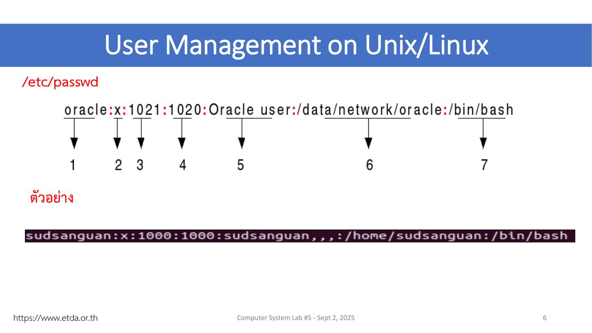
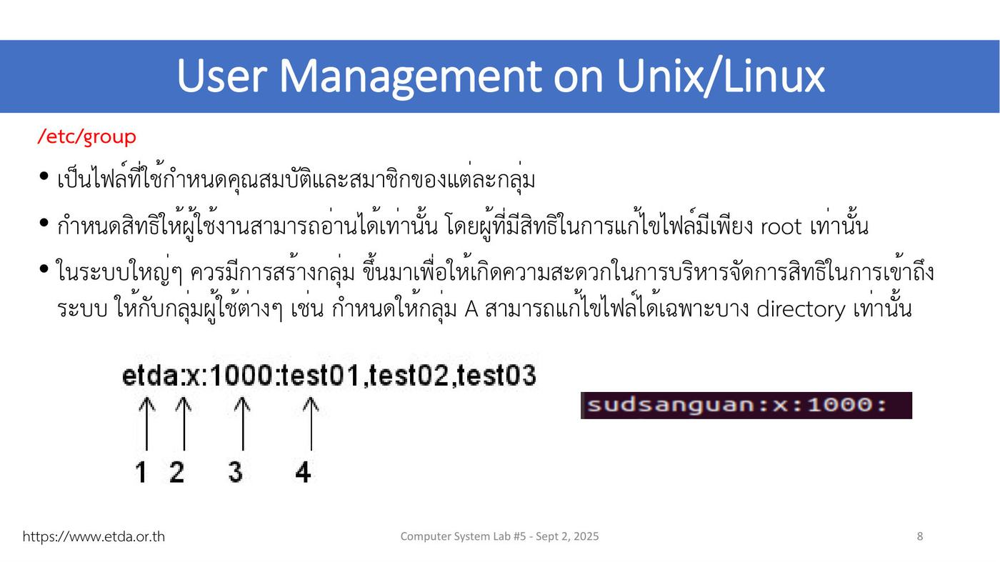
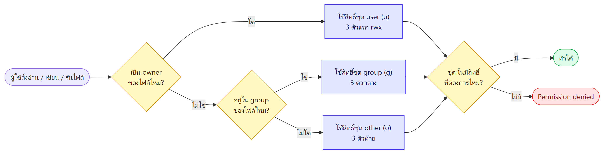
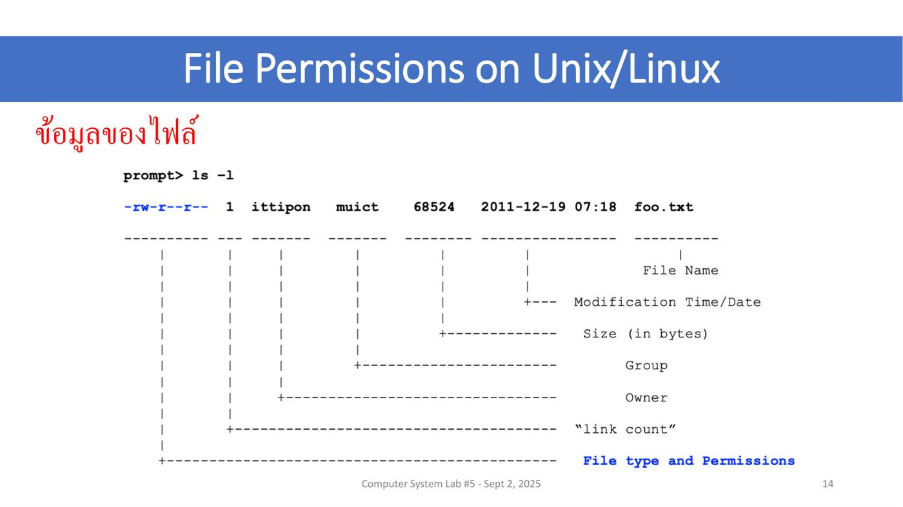
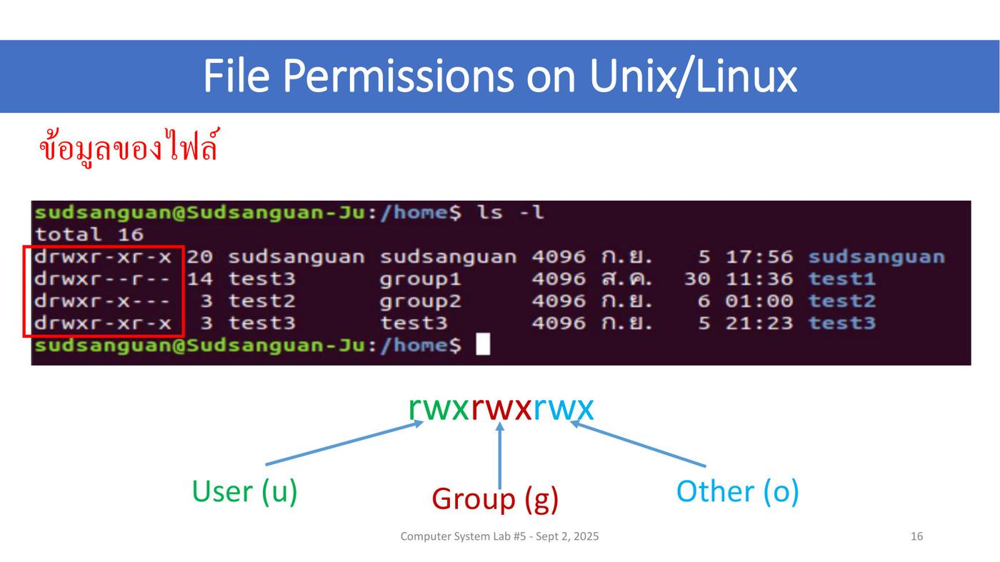
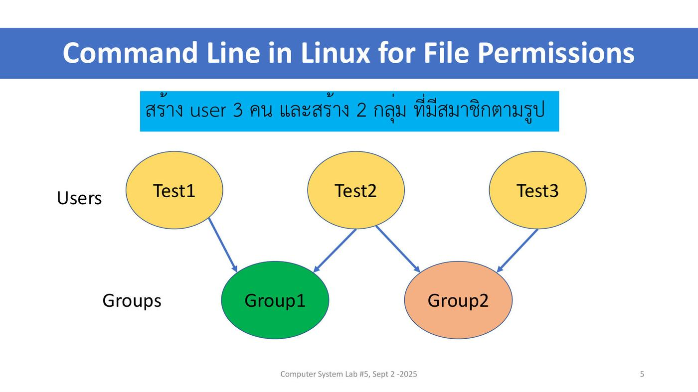

ภาพรวมบทนี้ ต่อจาก L4 (User Management) ที่สร้าง user และ group แล้ว บทนี้ตอบคำถามว่า "ใครทำอะไรกับไฟล์ไหนได้บ้าง"
(1) Lecture 5 ทบทวนไฟล์เก็บข้อมูลผู้ใช้ (
/etc/passwd,/etc/shadow,/etc/group),sudo/suแล้วเข้าเรื่องสิทธิ์ไฟล์: อ่านls -l, สิทธิ์ r w x ของ user / group / other, คำสั่งchmod(แบบตัวเลขและตัวอักษร),chown,chgrp(2) Lab 5 ลงมือสร้าง user 3 คน group 2 กลุ่ม แล้วทดลองเปลี่ยนสิทธิ์ home directory ดูว่าใครเข้าได้ ใครโดน
Permission deniedเรื่องนี้สำคัญมากในการดูแลระบบ Linux เพราะเป็นกลไกหลักที่กันไม่ให้ผู้ใช้คนหนึ่งอ่านหรือแก้ไฟล์ของคนอื่น
ส่วนที่ 1 — Lecture 5: File Permission
1. ข้อมูลรายวิชา (ย่อ)
- สัปดาห์ที่ 5 ตามตาราง = การเรียนรู้เรื่องสิทธิ์ของผู้ใช้ (ต่อจากสัปดาห์ 4 การจัดการผู้ใช้และกลุ่มผู้ใช้)
- เกณฑ์คะแนนเหมือนเดิม: เข้าเรียน 80% · รายงานแลป 25 · ทดสอบย่อย 25 · กลางภาค 25 (สัปดาห์ 9) · ปลายภาค 25 (สัปดาห์ 17)
- ⚠️ ส่งรายงานแลป ภายใน 23.59 น. ของวันอังคาร หรือวันที่มีการเรียน · มี ทดสอบย่อยทุกสัปดาห์ก่อนจบคาบ
2. ประเภทของผู้ใช้ (User Management on Unix/Linux)
UNIX ออกแบบให้กำหนดสิทธิ์การเข้าถึงได้หลายระดับ เพื่อจำกัดว่าผู้ใช้แต่ละระดับใช้ทรัพยากรของระบบได้แค่ไหน แบ่งผู้ใช้เป็น 2 ระดับ:
| ระดับ | ความหมาย | ตัวอย่าง |
|---|---|---|
| User | ผู้ใช้ทั่วไป สิทธิ์จำกัด หรือ user ที่สร้างไว้ให้โปรแกรมประยุกต์ใช้ | ผู้ใช้ทั่วไป, user ของ Web Server |
| Superuser | มีสิทธิ์บริหารจัดการระบบทุกอย่าง เช่น สร้าง user / กำหนดสิทธิ์ให้ผู้ใช้, ปิด process สำคัญ (เช่น Web Server), แก้ไฟล์ของระบบ | ใน UNIX ชื่อ root |
💡 (อธิบายเพิ่ม) ที่แยก user ให้โปรแกรมอย่าง Web Server ก็เพราะถ้าโปรแกรมโดนแฮ็ก ผู้บุกรุกจะได้แค่สิทธิ์จำกัดของ user นั้น ไม่ได้สิทธิ์ root ทั้งระบบ
3. ไฟล์ที่เก็บข้อมูลผู้ใช้ ⭐
- ข้อมูลผู้ใช้กระจายอยู่ใน 3 ไฟล์ ที่ใช้ร่วมกัน:
/etc/passwd,/etc/shadow,/etc/groupเก็บในรูปแบบต่างกัน - แต่ละไฟล์มีสิทธิ์การเข้าถึงไม่เหมือนกัน เพราะบางไฟล์เก็บความลับ เช่น รหัสผ่าน ที่ไม่ต้องการให้ผู้ใช้อื่นเห็น
- ผู้ใช้เข้าระบบด้วยชื่อที่เรียกว่า Username และมีรหัสผ่านของแต่ละ username
- ระบบระบุตัวผู้ใช้ด้วยหมายเลข UID (User Identifier) — แต่ละคนมี UID ไม่ซ้ำกัน
- ผู้ใช้เป็นสมาชิกของกลุ่มได้ โดยกลุ่มอ้างอิงด้วยหมายเลข GID (Group Identifier)
💡 (อธิบายเพิ่ม) ระบบจริง ๆ ดูที่ ตัวเลข UID/GID ไม่ได้ดูชื่อ ชื่อมีไว้ให้คนอ่าน
3.1 /etc/passwd — ข้อมูลบัญชีผู้ใช้ (7 ช่อง คั่นด้วย :)

ตัวอย่างในสไลด์: oracle:x:1021:1020:Oracle user:/data/network/oracle:/bin/bash
| ช่อง | ค่าในตัวอย่าง | ความหมาย (ชื่อช่องอธิบายเพิ่ม เพราะสไลด์มีแค่เลข 1–7) |
|---|---|---|
| 1 | oracle |
username |
| 2 | x |
รหัสผ่าน — x แปลว่ารหัสจริงเก็บอยู่ใน /etc/shadow |
| 3 | 1021 |
UID |
| 4 | 1020 |
GID ของกลุ่มหลัก (primary group) |
| 5 | Oracle user |
คำอธิบาย / ชื่อเต็ม (comment, GECOS) |
| 6 | /data/network/oracle |
home directory |
| 7 | /bin/bash |
login shell |
ตัวอย่างจริงในเครื่องอาจารย์: sudsanguan:x:1000:1000:sudsanguan,,,:/home/sudsanguan:/bin/bash
💡 ใน Lab จะเห็นบรรทัดอย่าง
vboxadd:x:999:1::/var/run/vboxadd:/bin/falseและsshd:x:122:65534::/run/sshd:/usr/sbin/nologin(อธิบายเพิ่ม) พวกนี้คือ user ของระบบ/โปรแกรม ที่ shell เป็น/bin/falseหรือnologin= login เข้ามาใช้งานไม่ได้
3.2 /etc/shadow — รหัสผ่านที่เข้ารหัสแล้ว
ตัวอย่างในสไลด์: vivek:$1$fnfffc$pGteyHdicpGOfffXX4ow#5:13064:0:99999:7:::
| ช่อง | ค่าในตัวอย่าง | ความหมาย (อธิบายเพิ่ม) |
|---|---|---|
| 1 | vivek |
username |
| 2 | $1$fnfffc$pGtey… |
รหัสผ่านที่เข้ารหัส (hash) — $1$ = MD5, ตัวอย่างของอาจารย์ขึ้นต้น $6$ = SHA-512 |
| 3 | 13064 |
วันที่เปลี่ยนรหัสล่าสุด (นับเป็นจำนวนวันตั้งแต่ 1 ม.ค. 1970) |
| 4 | 0 |
จำนวนวันขั้นต่ำก่อนเปลี่ยนรหัสได้อีก |
| 5 | 99999 |
จำนวนวันสูงสุดที่รหัสใช้ได้ (99999 = แทบไม่หมดอายุ) |
| 6 | 7 |
เตือนล่วงหน้ากี่วันก่อนรหัสหมดอายุ |
ตัวอย่างจริง: sudsanguan:$6$3ZRG5naN$eLo8R6Fzlto…:18415:0:99999:7:::
⚠️ ผู้ใช้ทั่วไปอ่าน
/etc/shadowไม่ได้ ต้องใช้sudo(ดูหัวข้อ 4) ส่วน/etc/passwdใครก็อ่านได้ นี่คือเหตุผลที่แยกรหัสผ่านออกมาไว้คนละไฟล์
3.3 /etc/group — ข้อมูลกลุ่ม

- เป็นไฟล์กำหนดคุณสมบัติและสมาชิกของแต่ละกลุ่ม
- ผู้ใช้ทั่วไปอ่านได้อย่างเดียว คนที่แก้ไขได้มีเพียง root
- ในระบบใหญ่ ควรสร้างกลุ่มเพื่อให้จัดการสิทธิ์ง่าย เช่น ให้กลุ่ม A แก้ไฟล์ได้เฉพาะบาง directory
ตัวอย่าง: etda:x:1000:test01,test02,test03
| ช่อง | ค่า | ความหมาย |
|---|---|---|
| 1 | etda |
ชื่อกลุ่ม |
| 2 | x |
รหัสผ่านกลุ่ม (ไม่ค่อยใช้) |
| 3 | 1000 |
GID |
| 4 | test01,test02,test03 |
รายชื่อสมาชิก คั่นด้วยจุลภาค (ว่างได้ เช่น sudsanguan:x:1000:) |
4. คำสั่งจัดการผู้ใช้ และ sudo / su
คำสั่งพื้นฐานบริหารผู้ใช้:
useradd— เพิ่มผู้ใช้usermod— แก้ไขข้อมูลผู้ใช้ (เช่น เพิ่มเข้า group)userdel— ลบผู้ใช้
ยืมสิทธิ์ / สลับผู้ใช้:
| คำสั่ง | ทำอะไร | ตัวอย่างในสไลด์ |
|---|---|---|
sudo |
ผู้ใช้ทั่วไปรันคำสั่งเสมือนเป็น root (ทีละคำสั่ง) | sudo more /etc/shadow |
su |
login เป็นผู้ใช้คนอื่น (ต้องใส่รหัสผ่านของคนนั้น) | su test1 |
ตัวอย่าง su ในสไลด์:
sudsanguan@Sudsanguan-Ju:~$ whoami
sudsanguan
sudsanguan@Sudsanguan-Ju:~$ su test1
Password:
test1@Sudsanguan-Ju:/home/sudsanguan$ whoami
test1
whoamiบอกว่าตอนนี้เป็นใคร · หลังsu test1prompt เปลี่ยนเป็นtest1@…แต่ยังอยู่ directory เดิม (/home/sudsanguan)
⚠️ sudo vs su:
sudoใส่รหัสผ่านของตัวเอง แล้วได้สิทธิ์ root เฉพาะคำสั่งนั้น ·su ชื่อใส่รหัสผ่านของคนนั้น แล้วกลายเป็นคนนั้นจนกว่าจะพิมพ์exit
5. สิทธิ์ไฟล์: 3 กลุ่มผู้ใช้ × 3 สิทธิ์ ⭐⭐
คำสั่งพื้นฐานจัดการสิทธิ์ไฟล์:
chmod— ปรับเปลี่ยนสิทธิ์chown— เปลี่ยนเจ้าของไฟล์chgrp— เปลี่ยนกลุ่มของไฟล์
3 กลุ่มผู้ใช้
| กลุ่ม | ตัวย่อ | ความหมาย |
|---|---|---|
| เจ้าของ (Owner หรือ User) | u | ผู้สร้างไฟล์หรือโฟลเดอร์ |
| กลุ่ม (Group) | g | ผู้ใช้ที่อยู่กลุ่มเดียวกับไฟล์ ใช้ไฟล์ของเพื่อนร่วมกลุ่มได้ หรือมีสิทธิ์ต่างจากคนนอกกลุ่ม |
| ผู้อื่น (Other) | o | ผู้ใช้ทั่วไปที่ไม่ใช่ owner และไม่ใช่ group |
⚠️ สไลด์เขียนว่า Other คือ "ไม่ใช่ Owner หรือ Other" ซึ่งน่าจะพิมพ์ผิด ที่ถูกคือ ไม่ใช่ Owner และไม่ใช่ Group
3 ประเภทสิทธิ์
| สิทธิ์ | ตัวอักษร | กับไฟล์ (จากสไลด์) | กับ directory (อธิบายเพิ่ม — สำคัญมากใน Lab) |
|---|---|---|---|
| Read | r | อ่านข้อมูลในไฟล์ | ดูรายชื่อไฟล์ข้างใน (ls) |
| Write | w | แก้ไขข้อมูลในไฟล์ (ไม่ใช่สิทธิ์ลบไฟล์) | สร้าง / ลบ / เปลี่ยนชื่อไฟล์ข้างใน |
| Execute | x | เรียกใช้งาน (รัน) ไฟล์ | เข้าไปใน directory (cd) และเข้าถึงไฟล์ข้างใน |
💡 ทำไม w ของไฟล์ไม่ใช่สิทธิ์ลบ? (อธิบายเพิ่ม) การลบไฟล์คือการเอาชื่อออกจาก directory จึงขึ้นกับสิทธิ์ w ของ directory ที่ไฟล์อยู่ ไม่ใช่ของตัวไฟล์
💡 ถ้า directory ไม่มี x ต่อให้มี r ก็เข้าไป (
cd) ไม่ได้ และเปิดไฟล์ข้างในไม่ได้ Lab 5 ทดลองเรื่องนี้ทั้งหมด
Linux ตัดสินว่าใช้สิทธิ์ชุดไหน (อธิบายเพิ่ม)

ระบบเช็กทีละขั้นแล้วหยุดที่ขั้นแรกที่ตรง: เป็น owner ไหม → อยู่ใน group ของไฟล์ไหม → ถ้าไม่ใช่ทั้งคู่ใช้สิทธิ์ other · root ข้ามการตรวจนี้ได้ จึงต้องใช้ sudo ในการเปลี่ยนสิทธิ์ไฟล์ของคนอื่น
6. อ่านผล ls -l ⭐⭐

ตัวอย่าง: -rw-r--r-- 1 ittipon muict 68524 2011-12-19 07:18 foo.txt
| ส่วน | ค่า | ความหมาย |
|---|---|---|
| 1 | -rw-r--r-- |
File type and Permissions |
| 2 | 1 |
"link count" |
| 3 | ittipon |
Owner |
| 4 | muict |
Group |
| 5 | 68524 |
Size (in bytes) |
| 6 | 2011-12-19 07:18 |
Modification Time/Date |
| 7 | foo.txt |
File Name |
แยก 10 ตัวอักษรแรก

| ตำแหน่ง | ตัวอย่าง drwxr-xr-x |
ความหมาย |
|---|---|---|
| ตัวที่ 1 | d |
ชนิดไฟล์: d = directory, - = ไฟล์ธรรมดา (อธิบายเพิ่ม: l = symbolic link) |
| ตัวที่ 2–4 | rwx |
สิทธิ์ของ User (u) |
| ตัวที่ 5–7 | r-x |
สิทธิ์ของ Group (g) |
| ตัวที่ 8–10 | r-x |
สิทธิ์ของ Other (o) |
-ในตำแหน่งสิทธิ์ = ไม่มีสิทธิ์นั้น
ตัวอย่างในสไลด์ (ใน /home):
drwxr-xr-x 20 sudsanguan sudsanguan 4096 ก.ย. 5 17:56 sudsanguan
drwxr--r-- 14 test3 group1 4096 ส.ค. 30 11:36 test1
drwxr-x--- 3 test2 group2 4096 ก.ย. 6 01:00 test2
drwxr-xr-x 3 test3 test3 4096 ก.ย. 5 21:23 test3
อ่านบรรทัด test2: directory · owner test2 ได้ rwx · สมาชิก group2 ได้ r-x (ดูและเข้าได้แต่สร้าง/ลบไม่ได้) · คนอื่น --- (ทำอะไรไม่ได้เลย)
7. chmod แบบตัวเลข (octal) ⭐⭐
แต่ละสิทธิ์มีค่า r = 4, w = 2, x = 1 แล้วบวกกันได้เลข 0–7 ต่อ 1 กลุ่ม
| เลข | เท่ากับ | เลขฐานสอง | สิทธิ์ |
|---|---|---|---|
| 0 | 0+0+0 | 000 | --- |
| 1 | 0+0+1 | 001 | --x |
| 2 | 0+2+0 | 010 | -w- |
| 3 | 0+2+1 | 011 | -wx |
| 4 | 4+0+0 | 100 | r-- |
| 5 | 4+0+1 | 101 | r-x |
| 6 | 4+2+0 | 110 | rw- |
| 7 | 4+2+1 | 111 | rwx |
ใส่เลข 3 หลักเรียง user–group–other:
| คำสั่ง | ผลลัพธ์ |
|---|---|
chmod 777 แฟ้มA.txt |
-rwxrwxrwx |
chmod 754 แฟ้มB.txt |
-rwxr-xr-- |
chmod 500 แฟ้มC.txt |
-r-x------ |
chmod 000 แฟ้มD.txt |
---------- |
chmod 124 แฟ้มE.txt |
---x-w-r-- |
ตัวอย่างในเครื่อง:
$ ls -l foo
-rw-r--r-- 1 sudsanguan sudsanguan 6 เม.ย. 23 10:32 foo
$ chmod 755 foo
$ ls -l foo
-rwxr-xr-x 1 sudsanguan sudsanguan 6 เม.ย. 23 10:32 foo
💡 วิธีคิดเร็ว (อธิบายเพิ่ม): เลข 3 หลักคือ user/group/other แต่ละหลักถามตัวเองว่า "อยากให้ r(4) w(2) x(1) ตัวไหนบ้าง" แล้วบวกกัน · เลขที่ควรจำ: 755 (โปรแกรม/โฟลเดอร์ทั่วไป), 644 (ไฟล์ทั่วไป), 700 / 600 (ส่วนตัว เจ้าของคนเดียว)
8. chmod แบบตัวอักษร (symbolic)
รูปแบบ: chmod [u/g/o] <+/-> <r/w/x> filename
| คำสั่ง | ความหมาย |
|---|---|
chmod g+w sample.txt |
เพิ่มสิทธิ์เขียนให้ group |
chmod o-r sample.txt |
ลบสิทธิ์อ่านของ other |
chmod +x sample.txt |
เพิ่มสิทธิ์รัน (ไม่ระบุกลุ่ม = ทุกกลุ่ม) |
ตัวอย่างในเครื่อง:
$ ls -l foo
-rw-r--r-- 1 sudsanguan sudsanguan 6 เม.ย. 23 10:32 foo
$ chmod g+x foo
$ ls -l foo
-rw-r-xr-- 1 sudsanguan sudsanguan 6 เม.ย. 23 10:32 foo
⚠️ ตัวเลข vs ตัวอักษร: แบบตัวเลขกำหนดสิทธิ์ใหม่ทั้งหมด ส่วนแบบตัวอักษรแก้เฉพาะส่วนที่ระบุ ที่เหลือคงเดิม (อธิบายเพิ่ม: ยังมี
a= ทุกกลุ่ม และ== กำหนดให้เท่ากับ เช่นchmod u=rw file)
9. chown และ chgrp
chown — เปลี่ยนเจ้าของไฟล์
รูปแบบ: chown ชื่อผู้ใช้:ชื่อกลุ่ม ชื่อไฟล์ (ใส่แค่ส่วนใดส่วนหนึ่งได้)
| คำสั่ง | ก่อน | หลัง |
|---|---|---|
chown games test |
-rwx------ 1 root root … test |
-rwx------ 1 **games** root … test (เปลี่ยนแค่ owner) |
chown :staff test |
-rwx------ 1 games root … test |
-rwx------ 1 games **staff** … test (ขึ้นต้น : = เปลี่ยนแค่ group) |
chgrp — เปลี่ยนกลุ่มของไฟล์
รูปแบบ: chgrp ชื่อกลุ่ม ชื่อไฟล์
- ตัวอย่างเปลี่ยนกลุ่มของโฟลเดอร์:
sudo chgrp geeksforgeeks GFG→ โฟลเดอร์GFGเปลี่ยนกลุ่มจากkcvirtualเป็นgeeksforgeeks
ตัวอย่างรวม chown + chgrp (สไลด์ 23)
$ ls -l foo
-rw-r-xr-- 1 sudsanguan sudsanguan 6 เม.ย. 23 10:32 foo
$ sudo cp foo /home/test3
$ cd ../test3
$ ls -l foo
-rw-r-xr-- 1 root root 6 ก.ย. 6 01:56 foo
$ sudo chown test3 foo
$ ls -l foo
-rw-r-xr-- 1 test3 root 6 ก.ย. 6 01:56 foo
$ sudo chgrp group2 foo
$ ls -l foo
-rw-r-xr-- 1 test3 group2 6 ก.ย. 6 01:56 foo
- ⭐ ไฟล์ที่ copy ด้วย
sudo cpจะเป็นของ root root เพราะ root เป็นคนสร้างสำเนา จึงต้องchown/chgrpให้เจ้าของที่ถูกต้อง chownและchgrpไม่เปลี่ยนสิทธิ์ rwx เปลี่ยนแค่ว่าใครเป็น owner / group
⚠️ (อธิบายเพิ่ม) การเปลี่ยนเจ้าของไฟล์ให้คนอื่นต้องใช้
sudoเสมอ ไม่อย่างนั้นใครก็โยนไฟล์ให้คนอื่นได้
ส่วนที่ 2 — Lab 5: File Permissions
10. วัตถุประสงค์ สิ่งที่ส่ง และคำสั่งที่ใช้
Objectives: 1. Study File Permissions on Linux · 2. Practice Linux commands for File Permissions
What to Submit:
- แคปหน้าจอทุกคำสั่งที่ฝึก และเขียนอธิบายผลลัพธ์ของแต่ละคำสั่ง
- รวมเป็น PDF ไฟล์เดียว ส่งบน MyCourses ชื่อ
6887xxx_lab5.pdf - ⚠️ ส่งวันนี้ (September 1) ก่อนเที่ยงคืน
คำสั่งที่ใช้ในแลป:
| จัดการผู้ใช้/กลุ่ม | จัดการสิทธิ์ |
|---|---|
useradd, usermod, userdel, passwd, su, sudo, groupadd |
chmod, chown, chgrp, groups |
โจทย์หลัก: สร้าง user 3 คน และ 2 กลุ่ม ที่มีสมาชิกตามรูป

| กลุ่ม | สมาชิก |
|---|---|
| group1 | test1, test2 |
| group2 | test2, test3 |
💡 test2 อยู่ทั้งสองกลุ่ม — ใช้ทดสอบว่าคนที่อยู่หลายกลุ่มได้สิทธิ์อย่างไร
11. Lab 5: เฉลยช่องว่างทีละหน้า
คำตอบในหัวข้อนี้ผมอ่านจาก screenshot ในสไลด์แลป ส่วนคำสั่งที่สไลด์ไม่ได้แสดง (หน้า 11–13) เป็นแนวคำตอบ ตอนทำจริงให้แคปผลจากเครื่องตัวเองประกอบ
หน้า 6 — ข้อมูลนี้อยู่ในไฟล์ชื่ออะไร
sudsanguan:x:1000:1000:sudsanguan,,,:/home/sudsanguan:/bin/bash
vboxadd:x:999:1::/var/run/vboxadd:/bin/false
sshd:x:122:65534::/run/sshd:/usr/sbin/nologin
→ /etc/passwd (7 ช่อง มี UID, GID, home, shell)
sudsanguan:x:1000:
sambashare:x:126:sudsanguan
vboxsf:x:999:sudsanguan
testing:x:2000:
→ /etc/group (4 ช่อง: ชื่อกลุ่ม, x, GID, สมาชิก)
หน้า 7–10 — จากผล pwd และ ls -l ใน home
sudsanguan@Sudsanguan-Ju:~$ pwd
/home/sudsanguan
-rw-r--r-- 1 sudsanguan sudsanguan 6 เม.ย. 23 10:32 foo
| คำถาม | คำตอบ |
|---|---|
| Home directory ที่แสดงอยู่ชื่อ | /home/sudsanguan |
| ผู้ใช้ที่เป็น user หรือ owner คือ | sudsanguan |
สิทธิ์ของ owner สำหรับไฟล์ foo |
rw- (อ่านและเขียน) |
สิทธิ์ของ group สำหรับไฟล์ foo |
r-- (อ่านอย่างเดียว) |
หน้า 11 — สร้าง user test1 ด้วยคำสั่งเดียว
ผลที่ต้องได้ใน /etc/passwd: test1:x:1001:1001:Mr. Test1:/home/test1:/bin/bash
- คำสั่ง (แนวคำตอบ):
sudo useradd -m -c "Mr. Test1" -s /bin/bash test1-mสร้าง home directory/home/test1·-cใส่ comment "Mr. Test1" ·-sกำหนด shell/bin/bash
- UID ของ test1 =
1001
หน้า 12 — สร้าง test2 และ test3
test2:x:1002:1002:Mr. Test2:/home/test2:/bin/bash
test3:x:1003:1003:Mr. Test3:/home/test3:/bin/bash
- คำสั่ง (แนวคำตอบ):
sudo useradd -m -c "Mr. Test2" -s /bin/bash test2และsudo useradd -m -c "Mr. Test3" -s /bin/bash test3 - UID ของ test2 =
1002, UID ของ test3 =1003
💡 UID ได้เลขต่อจาก user ล่าสุด (sudsanguan = 1000) อัตโนมัติ
หน้า 13 — แสดงข้อมูลกลุ่ม
test1:x:1001:
test2:x:1002:
test3:x:1003:
- คำสั่งที่ใช้แสดงผล:
cat /etc/group(หรือmore/tail /etc/group) - GID ของ test1 =
1001, test2 =1002, test3 =1003
💡 (อธิบายเพิ่ม)
useraddสร้างกลุ่มส่วนตัวชื่อเดียวกับ user ให้อัตโนมัติ (user private group) GID จึงเท่ากับ UID
หน้า 14 — สรุปผล ls -l test1, ls -l test2, ls -l test3
- ข้อสรุป: home directory ของ user ใหม่ถูกสร้างจริง และไฟล์ข้างในเป็นของ user นั้นกับกลุ่มของตัวเอง (
test1 test1,test2 test2,test3 test3) test2และtest3มีแค่examples.desktopที่ระบบคัดลอกมาให้ตอนสร้าง user ส่วนtest1มีโฟลเดอร์ Desktop, Documents, Downloads, Music ฯลฯ (อธิบายเพิ่ม: โฟลเดอร์เหล่านี้ถูกสร้างเมื่อ user นั้นเคย login ผ่านหน้าจอ GUI)
หน้า 15 — ผลของ sudo passwd test1/test2/test3
- ตั้งรหัสผ่านให้ user ใหม่ทั้ง 3 คน — ใส่รหัส 2 รอบ แล้วขึ้น
passwd: password updated successfully - ต้องมี
sudoเพราะเป็นการเปลี่ยนรหัสของคนอื่น · ถ้าไม่ตั้งรหัส จะsu test1เข้าไม่ได้
หน้า 16 — สร้าง group1 และ group2
sudo groupadd -g 2001 group1
sudo groupadd -g 2002 group2
-g= กำหนด GID เอง- GID ของ group1 =
2001, GID ของ group2 =2002
หน้า 17 — เพิ่มสมาชิกเข้ากลุ่ม
sudo usermod -a -G group1 test1
sudo usermod -a -G group1 test2
sudo usermod -a -G group2 test2
sudo usermod -a -G group2 test3
-G= กำหนดกลุ่มเสริม (supplementary group) ·-a= append เพิ่มต่อท้าย ไม่ลบกลุ่มเดิม
⚠️ (อธิบายเพิ่ม) ถ้าลืม
-aแล้วสั่งusermod -G group2 test2→ test2 จะหลุดจาก group1 เพราะ-Gอย่างเดียวคือ "แทนที่" รายการกลุ่มทั้งหมด
หน้า 18 — สรุปผลลัพธ์
group1:x:2001:test1,test2
group2:x:2002:test2,test3
$ groups test1 → test1 : test1 group1
$ groups test2 → test2 : test2 group1 group2
$ groups test3 → test3 : test3 group2
- สรุป: สมาชิกของแต่ละกลุ่มตรงกับแผนภาพโจทย์ — group1 มี test1, test2 · group2 มี test2, test3 · test2 อยู่ 2 กลุ่ม
- คำสั่ง
groups ชื่อผู้ใช้แสดงทุกกลุ่มของ user นั้น (กลุ่มแรกคือกลุ่มหลักของตัวเอง)
หน้า 19 — rwx bits ของ directory test2
drwxr-xr-x 2 test2 test2 4096 Sep 5 19:53 test2
| คำถาม | คำตอบ |
|---|---|
| rwx bits ของ user | rwx — test2 ดูรายชื่อ, สร้าง/ลบไฟล์ และเข้าโฟลเดอร์ได้ |
| rwx bits ของ group | r-x — กลุ่ม test2 ดูรายชื่อและเข้าได้ แต่สร้าง/ลบไฟล์ไม่ได้ |
| rwx bits ของ others | r-x — คนอื่นดูรายชื่อและเข้าได้ แต่สร้าง/ลบไฟล์ไม่ได้ |
หน้า 20 — sudo chmod 700 test2
$ ls -l test2 ← ก่อน: ดูได้ (others มี r-x)
-rw-r--r-- 1 test2 test2 8980 เม.ย. 16 2018 examples.desktop
$ sudo chmod 700 test2
$ ls -l test2
ls: cannot open directory 'test2': Permission denied
- อธิบาย: 700 =
rwx------เหลือสิทธิ์แค่ owner (test2) ·sudsanguanเป็น others ซึ่งตอนนี้เป็น---จึงเปิด directory ไม่ได้ → Permission denied
หน้า 21 — su test2 แล้ว ls -l test2
$ su test2
test2@Sudsanguan-Ju:/home$ whoami
test2
test2@Sudsanguan-Ju:/home$ ls -l test2
-rw-r--r-- 1 test2 test2 8980 เม.ย. 16 2018 examples.desktop
- อธิบาย: พอสลับเป็น test2 ซึ่งเป็น owner ที่มี
rwxก็ดูข้างในได้ปกติ · ยืนยันว่า 700 = "เจ้าของคนเดียวเท่านั้น"
หน้า 22 — sudo chgrp group2 test2
drwx------ 3 test2 test2 … test2 ← ก่อน
drwx------ 3 test2 group2 … test2 ← หลัง
- อธิบาย: กลุ่มของ directory test2 เปลี่ยนจาก
test2เป็นgroup2ส่วนสิทธิ์ยังเป็นrwx------เหมือนเดิม (chgrp ไม่แตะสิทธิ์) — ตอนนี้สมาชิก group2 ยังเข้าไม่ได้ เพราะ group ยังเป็น---
หน้า 23 — sudo chmod 750 test2
drwxr-x--- 3 test2 group2 … test2
- อธิบาย: 750 =
rwxr-x---→ เปิดให้สมาชิก group2 ดูรายชื่อและเข้าโฟลเดอร์ได้ - rwx bits ของ group =
r-x· rwx bits ของ others =---
หน้า 24 — ทดสอบด้วย test1 และ test3
$ su test1
test1@…:/home$ ls -l test2
ls: cannot open directory 'test2': Permission denied
test1@…:/home$ exit
$ su test3
test3@…:/home$ ls -l test2
-rw-r--r-- 1 test2 test2 8980 เม.ย. 16 2018 examples.desktop
- อธิบาย:
- test1 อยู่ group1 ไม่ได้อยู่ group2 → ถูกนับเป็น others (
---) → Permission denied - test3 อยู่ใน group2 → ได้สิทธิ์ group (
r-x) → ดูรายชื่อไฟล์ได้
- test1 อยู่ group1 ไม่ได้อยู่ group2 → ถูกนับเป็น others (
- ⭐ หน้านี้คือหัวใจของแลป: สิทธิ์ที่ได้ขึ้นกับว่าเราอยู่กลุ่มไหน ไม่ใช่ขึ้นกับชื่อ
หน้า 25 — sudo chown test3 test1
drwxr-xr-x 14 test1 test1 … test1 ← ก่อน
drwxr-xr-x 14 test3 test1 … test1 ← หลัง
- อธิบาย: owner ของ directory test1 เปลี่ยนเป็น test3 ส่วน group ยังเป็น test1 และสิทธิ์ยัง
rwxr-xr-x
หน้า 26 — sudo chgrp group1 test1
drwxr-xr-x 14 test3 group1 … test1
- อธิบาย: group ของ directory test1 เปลี่ยนเป็น group1 → ตอนนี้ test3 เป็น owner, สมาชิก group1 (test1, test2) ใช้สิทธิ์ group
r-x
⚠️ ผลที่ได้ค่อนข้างแปลก: test1 ไม่ได้เป็นเจ้าของ home ของตัวเองแล้ว (เจ้าของคือ test3) Exercise ถัดไปจะใช้สถานะนี้ต่อ
12. Lab 5: Exercise ท้ายแลป (แนวคำตอบ)
สไลด์ให้แค่คำสั่ง ไม่มีผลลัพธ์ ด้านล่างเป็นผลที่ควรได้ โดยสมมติว่าเริ่มจากสถานะหลังหน้า 26 คือ
drwxr-xr-x test3 group1 test1ตอนทำจริงให้แคปผลจากเครื่องตัวเองแล้วอธิบาย
Exercise 1
| # | คำสั่ง | ผลที่ควรได้ของ test1 | อธิบาย |
|---|---|---|---|
| 1 | ls -l |
drwxr-xr-x test3 group1 test1 |
สถานะตั้งต้น |
| 2 | sudo chmod o-x test1 |
– | เอา x ออกจาก others |
| 3 | ls -l |
drwxr-xr-- |
others เหลือ r--: เห็นรายชื่อแต่ cd เข้าไม่ได้ |
| 4 | sudo chmod g-x test1 |
– | เอา x ออกจาก group |
| 5 | ls -l |
drwxr--r-- |
group ก็เหลือ r-- (ตรงกับผลที่เห็นในสไลด์ lecture หน้า 16) |
| 6 | su test1 |
login เป็น test1 ได้ | test1 ไม่ใช่ owner (owner คือ test3) แต่อยู่ group1 จึงได้สิทธิ์ group r-- → เข้า (cd) home ของตัวเองไม่ได้ และเปิดไฟล์ข้างในไม่ได้ (ถ้าใช้ su - test1 จะขึ้นเตือนว่าเข้า home directory ไม่ได้) |
Exercise 2
| # | คำสั่ง | ผลที่ควรได้ | อธิบาย |
|---|---|---|---|
| 1 | ls -l |
drwxr--r-- (ต่อจาก Exercise 1) |
สถานะตั้งต้น |
| 2 | sudo chmod 755 test1 |
– | 7=rwx, 5=r-x, 5=r-x |
| 3 | ls -l |
drwxr-xr-x |
ทุกคนเข้าและดูได้ มีแต่ owner ที่สร้าง/ลบได้ |
| 4 | sudo chmod 644 test1 |
– | 6=rw-, 4=r--, 4=r-- |
| 5 | ls -l |
drw-r--r-- |
ไม่มี x เลยสักกลุ่ม → ไม่มีใคร (นอกจาก root) cd เข้าไปได้ แม้แต่ owner |
| 6 | sudo chmod 600 test1 |
– | 6=rw-, 0=---, 0=--- |
| 7 | ls -l |
drw------- |
เหลือแค่ owner ที่มี r, w แต่ยังไม่มี x |
| 8 | su test1 |
login ได้ | test1 อยู่ group1 ซึ่งตอนนี้เป็น --- → ดูรายชื่อและเข้า home ของตัวเองไม่ได้เลย (Permission denied) |
💡 บทเรียนจาก Exercise (อธิบายเพิ่ม): เลข 644 / 600 เหมาะกับไฟล์ แต่ไม่เหมาะกับ directory เพราะ directory ที่ไม่มี x จะเข้าไม่ได้ · directory ควรใช้ 755 (ให้คนอื่นดูได้) หรือ 700 (ส่วนตัว)
คำศัพท์สำคัญ
| คำศัพท์ | ความหมาย | จำง่าย ๆ ว่า |
|---|---|---|
| User | ผู้ใช้ทั่วไป สิทธิ์จำกัด | คนทั่วไป |
| Superuser / root | ผู้ใช้ที่ทำได้ทุกอย่างในระบบ | ผู้ดูแลระบบ |
| UID | User Identifier หมายเลขประจำผู้ใช้ (ไม่ซ้ำกัน) | เลขบัตรประชาชน |
| GID | Group Identifier หมายเลขประจำกลุ่ม | เลขกลุ่ม |
/etc/passwd |
ข้อมูลบัญชี 7 ช่อง (username, x, UID, GID, comment, home, shell) ใครก็อ่านได้ | สมุดรายชื่อ |
/etc/shadow |
รหัสผ่านที่เข้ารหัส + อายุรหัส อ่านได้เฉพาะ root | ตู้เซฟรหัส |
/etc/group |
ชื่อกลุ่ม, x, GID, สมาชิก แก้ได้เฉพาะ root | ทะเบียนกลุ่ม |
useradd / usermod / userdel |
เพิ่ม / แก้ / ลบ ผู้ใช้ | add / mod / del |
passwd |
ตั้งหรือเปลี่ยนรหัสผ่าน | ตั้งรหัส |
groupadd |
สร้างกลุ่ม (-g กำหนด GID) |
สร้างกลุ่ม |
groups |
แสดงว่าผู้ใช้อยู่กลุ่มไหนบ้าง | ดูกลุ่ม |
sudo |
รันคำสั่งด้วยสิทธิ์ root (ใช้รหัสตัวเอง) | ยืมสิทธิ์ root |
su |
สลับไปเป็นผู้ใช้อื่น (ใช้รหัสของคนนั้น) | เปลี่ยนตัว |
whoami |
แสดงชื่อผู้ใช้ปัจจุบัน | ฉันคือใคร |
| Owner / Group / Other (u/g/o) | 3 กลุ่มผู้ใช้ที่กำหนดสิทธิ์แยกกัน | เจ้าของ / เพื่อนกลุ่ม / คนนอก |
| r / w / x | อ่าน / แก้ไข / รัน (กับ directory: ดูรายชื่อ / สร้าง-ลบ / เข้า) | 4 / 2 / 1 |
chmod |
เปลี่ยนสิทธิ์ แบบตัวเลข (755) หรือตัวอักษร (g+w) | change mode |
chown |
เปลี่ยนเจ้าของ (user:group) |
change owner |
chgrp |
เปลี่ยนกลุ่ม | change group |
| link count | ช่องที่ 2 ของ ls -l |
จำนวนลิงก์ |
| Permission denied | ข้อความเมื่อสิทธิ์ไม่พอ | โดนปฏิเสธ |
สรุปท้ายบท / จุดที่มักออกสอบ
เรื่องที่ต้องจำ
- ผู้ใช้ 2 ระดับ: User (จำกัด) / Superuser = root (ทำได้ทุกอย่าง)
- 3 ไฟล์:
/etc/passwd(7 ช่อง, รหัสเป็นx),/etc/shadow(รหัสจริง เข้ารหัส อ่านได้เฉพาะ root),/etc/group(4 ช่อง, แก้ได้เฉพาะ root) - UID แต่ละคนไม่ซ้ำ · GID อ้างอิงกลุ่ม
sudo= ทำแทน root ทีละคำสั่ง ·su ชื่อ= สลับเป็นคนนั้นls -l7 ส่วน: type+permissions, link count, owner, group, size, modification time, name- 10 ตัวอักษร: ตัวแรก
d/-+ rwx ของ u, g, o - r = 4, w = 2, x = 1 · 755 =
rwxr-xr-x, 644 =rw-r--r--, 700 =rwx------, 750 =rwxr-x---, 600 =rw------- - write ของไฟล์ = แก้ไข ไม่ใช่ลบ
chmod [u/g/o] <+/-> <r/w/x> file·chown user:group file·chown :group file·chgrp group file- Lab: test1–3 ได้ UID/GID 1001–1003 · group1 = 2001 (test1, test2) · group2 = 2002 (test2, test3)
usermod -a -G กลุ่ม user= เพิ่มเข้ากลุ่มโดยไม่ลบกลุ่มเดิม
คู่ที่มักสับสน
| คู่ | ต่างกันที่ |
|---|---|
/etc/passwd vs /etc/shadow |
ข้อมูลบัญชี ใครก็อ่านได้ vs รหัสผ่านเข้ารหัส อ่านได้เฉพาะ root |
| UID vs GID | เลขประจำผู้ใช้ vs เลขประจำกลุ่ม |
sudo vs su |
ยืมสิทธิ์ root ทีละคำสั่ง (รหัสตัวเอง) vs กลายเป็นอีกคน (รหัสคนนั้น) |
chmod vs chown vs chgrp |
เปลี่ยนสิทธิ์ rwx vs เปลี่ยน owner vs เปลี่ยน group |
| chmod ตัวเลข vs ตัวอักษร | กำหนดใหม่ทั้งหมด vs แก้เฉพาะส่วน (+/-) |
| x ของไฟล์ vs x ของ directory | รันไฟล์ vs เข้าไปใน directory |
| w ของไฟล์ vs w ของ directory | แก้เนื้อหาไฟล์ vs สร้าง/ลบไฟล์ข้างใน |
usermod -a -G vs usermod -G |
เพิ่มกลุ่มต่อท้าย vs แทนที่กลุ่มเสริมทั้งหมด |
| Group vs Other | อยู่ในกลุ่มของไฟล์ vs ไม่ใช่ทั้ง owner และ group |
แนวคิดที่ต้องอธิบายได้
- ทำไมแยก
/etc/shadowออกจาก/etc/passwd→ passwd ต้องให้ทุกโปรแกรมอ่านได้ (เช่นแปลง UID เป็นชื่อ) จึงเอารหัสผ่านไปเก็บในไฟล์ที่อ่านได้เฉพาะ root - ทำไมหลัง
chmod 700 test2แล้ว sudsanguan ดูไม่ได้ แต่ test2 ดูได้ → sudsanguan เป็น others (---) ส่วน test2 เป็น owner (rwx) - ทำไมหลัง
chmod 750+chgrp group2test3 ดูได้ แต่ test1 ดูไม่ได้ → test3 อยู่ group2 ได้สิทธิ์r-xส่วน test1 ไม่อยู่ group2 จึงเป็น others--- - ทำไม directory ที่ตั้ง 644 เข้าไม่ได้แม้แต่เจ้าของ → ไม่มี x ซึ่งเป็นสิทธิ์ "เข้า" directory
- แปลงเลข ↔ rwx: แยกทีละหลัก แล้วบวก 4/2/1 หรือแตกกลับเป็น r/w/x